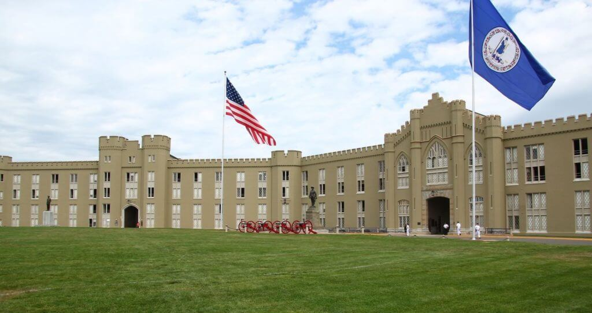
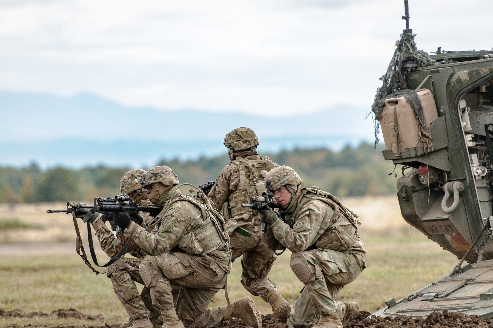
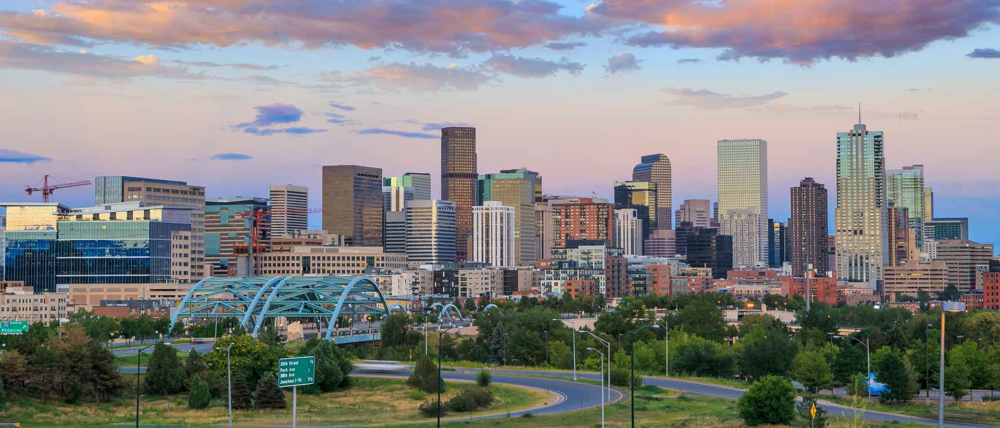

I was born and raised in Atlanta, GA. Although I moved around a few times, I lived in the city of Atlanta from birth till I went to College. Although I thought of moving back from time to time, traffic and housing prices have gotten worse than ever in Atlanta, and I really like Denver. And yes, I am an Atlanta sports fan, because apparently I am a masochist.
I attended the Virginia Military Institute (VMI) in Lexington, VA for college. I didn't have to go to a Military school, but I wanted to go to a place that challenged me and was atypical of "regular" colleges. While it was definitely difficult to listen to my friends tell story about the fun they were having in College, I definitely feel like being there increased my discipline, fitness, and as VMI Alums like to say "it's a great place to be from, but not a great place to be at".
At the end of my time at VMI, I commissioned as a Second Lieutenant, Field Artillery, United States Army. I'm not going to go into my entire Military career, because it would go on for quite a while. Needless to say, I wound up living all over the place, including Oklahoma, Washington, Georgia, Germany, Iraq, California, and Texas. I had a lot of different jobs, including Fire Direction Officer, Fire Support Officer, Infantry Platoon Leader, and I was a Company Commander twice.
After 8.5 years in the Army, I decided to move on. I had moved seven times in the last 8.5 years, and coming to the end of my second command, I knew that I more than likely had several years of working Staff to look forward to.
After I got done with the Army, my original intent was to either stay in Texas or move back to the Southeast. However, I utilized a Veteran recruiting firm, and during the hunt they had me interview with an HVAC-R and construction firm in Denver. I had spent time in Denver before, and really enjoyed the city, so when they made me an offer, it seemed an immediate fit.
I spent about 2 years as a Manager at the HVAC-R and construction company. Although I enjoyed the company and was good at what I did, I increasingly began to hate the idea of working in Management for the rest of my days. I really began to desire the idea of having some sort of palpable skills to my name, besides vague concepts like "organization" and "leadership". But what to do? I spent some time thinking about it, and I narrowed it down to two things I was really interested in: Medicine and Technology. At the time, I was single with no family, so I knew I could devote years to whatever endeavour I chose to pursue, so I opted to choose medicine. Little did I know my life would soon change in very unexpected ways.
Only a few short months after I went back to school, I met my now wife, Courtney. As both of us were older, our relationship moved quickly, and it wasn't particularly long until we were married and were wanting to start a family. With a kid on the way and us wanting to stay in Denver, suddenly the idea of me spending years in medical school and residency was looking less and less realistic.
Info on Courtney and my familySo it was that I decided to move into Tech. To be 100% honest, the decision was easier than I had expected. The more time I spent in Healthcare the more disillusioned I was becoming with our Healthcare system. Likewise, with my daughter now born, having a job that provided greater work/life flexibility seemed more important than ever. So it was that I took the plunge and went to Galvanize for their Web Development Immersive Program.